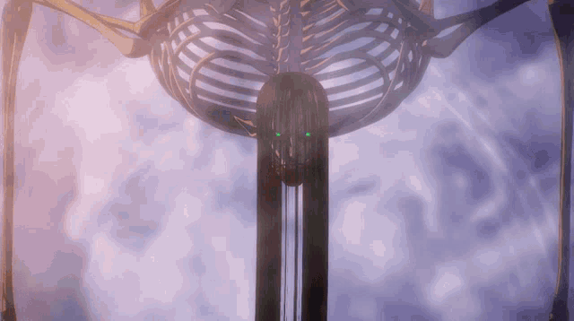

El Titán Fundador, también conocido como el Titán Progenitor, es el titán más poderoso en el universo de Shingeki no Kyojin. Poseído originalmente por Ymir Fritz,
el Titán Fundador tiene la capacidad de controlar a otros titanes y alterar la memoria de los eldianos. Esta capacidad única lo convierte en una herramienta crucial
en la manipulación y control de la historia y la sociedad dentro de las murallas. A lo largo de la serie, el poder del Titán Fundador se convierte en el centro de la
lucha por el control y la libertad, ya que puede determinar el destino de toda la humanidad. Los herederos del Titán Fundador, como los miembros de la familia real
Reiss y más tarde Eren Jaeger, juegan roles esenciales en la dirección que toma la historia, usando este poder para intentar moldear el futuro de su gente.
